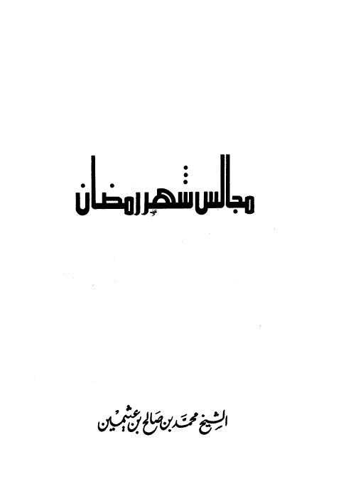

Downloads need an internet connection.
مجالس شهر رمضان
Authors: محمد بن صالح العثيمين
Publishers: دار المجتمع للنشر والتوزيع
▫️ العنوان: مجالس شهر رمضان ▪️ المؤلف: #محمد_بن_صالح_العثيمين ▫️ الناشر: #دار_المجتمع ▪️ تاريخ النشر: 1412هـ 1992م ▫️ بلد النشر: جدة، #السعودية ▪️ الطبعة: 7 ▫️ عدد الأجزاء: 1 ▪️ الصفحات: 152 ▫️ نوع الوعاء: #كتاب ▪️ التصنيف الرئيسي: #الزهد_والرقائق ۪